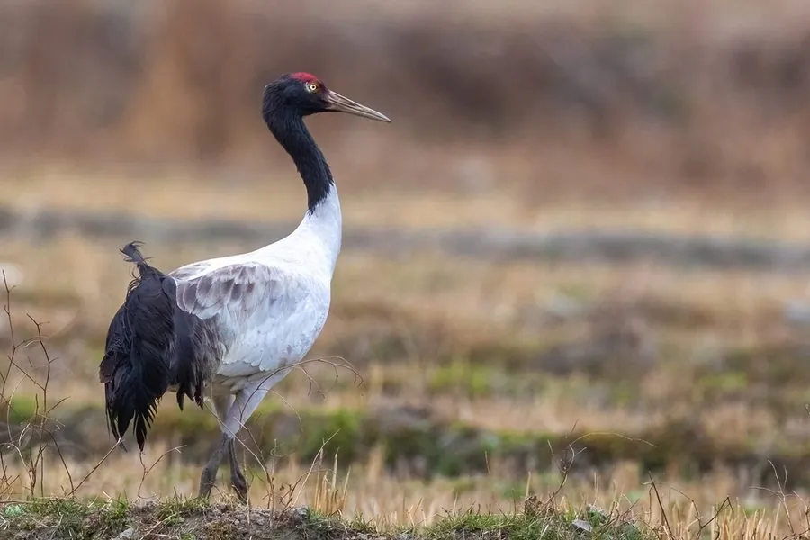

鸟类 · 动物界
黑颈鹤 Grus nigricollis

世界上唯一在高原繁殖的鹤类，头颈黑色、头顶暗红，在青藏高原湿地育雏，秋季迁往云南、西藏南部越冬。
- 分类
- 门脊索动物门纲鸟纲目鹤形目科鹤科属鹤属
- 栖息环境
- 海拔 3000–4900 米的高原沼泽、湖泊与草甸，越冬时也利用农田和河谷湿地
- 地理分布
- 繁殖于青藏高原及周边高山湿地，越冬于云南、西藏南部和贵州草海
- 保护级别
- IUCN 近危（NT）；中国国家一级保护动物
物种志
黑颈鹤体长 115–120 cm，体重约 5–6 kg，翼展 180–200 cm。它的头、颈和上背为黑色，头顶裸露的皮肤呈暗红色，眼后有一小块白斑，身体其余部分为灰白色，飞羽和尾羽黑色，站立时黑白对比明显。喙和腿都较长，适合在高原沼泽中涉水觅食。
黑颈鹤是最后被科学界发现的鹤类，1876 年才在青海湖一带被记录。它们在青藏高原的若尔盖草原、青海湖周边和西藏南部繁殖，越冬于云南香格里拉纳帕海、雅鲁藏布江河谷和贵州草海，是全球唯一终生在高原生活的鹤类。每年 5–6 月产卵 2 枚，孵化约 30–32 天。藏语称它为“冲冲”，视作吉祥的神鸟。全球种群约 1.7 万只，受湿地退化与农事干扰影响，现为中国国家一级保护动物。
形态与习性
- 食性植物根茎、青稞落粒、昆虫及小鱼，越冬时多在农田觅食
- 体长115–120 cm
- 翼展180–200 cm
- 体重约 5–6 kg
- 寿命野外约 20–30 年
- 繁殖5–6 月产卵 2 枚，孵化约 30–32 天
- 迁徙9–10 月沿河谷南迁，可翻越海拔 5000 米以上的山口
趣味知识
- 黑颈鹤是最后被科学界命名的鹤类，1876 年由俄国探险家普热瓦尔斯基首次记录。
- 它每年在海拔 4000 米以上的高原繁殖，是分布海拔最高的鹤类。
- 藏语把黑颈鹤称为“冲冲”，牧民认为它带来吉祥与丰收。
- 云南香格里拉纳帕海是重要越冬地，最多时聚集数百只黑颈鹤。